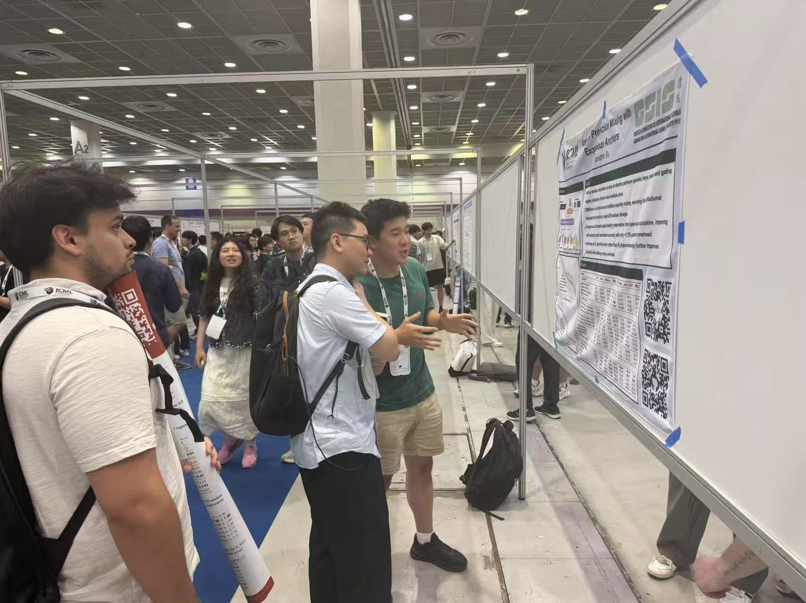
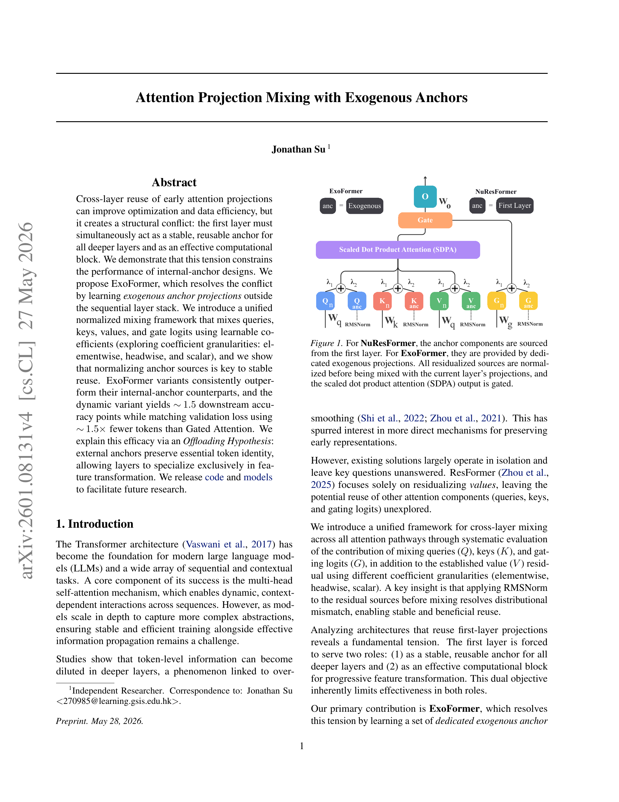

01 / SOLE-AUTHOR RESEARCHICML 2026 · MAIN TRACK
ExoFormer
At 16, I became, to my knowledge, the youngest sole author of a main-track paper at NeurIPS, ICLR, ACL or ICML. I did the research without mentorship.
After almost 300 runs and experiments, I built attention anchors outside the layer stack and normalized them for stable reuse.

